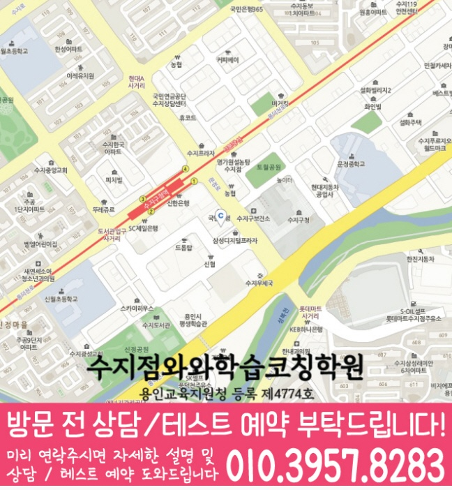

교과서 문법·독해 기반으로 현재 실력과 자주 틀리는 유형을 점검해, 공부 순서를 학생에게 맞게 설계합니다.
지역별 수강 안내
풍덕천동 중3 영어학원
방문할 지점과 수강 조건
수지점 수강 정보
- 연결 지점
- 수지점와와학습코칭학원
- 영어 수강 학년
- 초1~초6 / 중1~중3 / 고1~고3
- 방문 주소
- 경기 용인시 수지구 문정로 13 중수프라자 503호
제공된 지점 자료에서 수지점의 중3 영어 수강 학년을 확인했습니다. 현재 모집과 시간표는 상담에서 확인해 주세요.
선생님 소개
수지점 선생님을 만나보세요
선생님의 인사와 학습 지도 방향을 살펴보고, 상담에서 궁금한 내용을 준비해 보세요.
경기 용인시(수지구) 풍덕천동에서 중3 영어를 준비하는 학생을 위해, 현재 실력 진단부터 문법·독해 개념 정리, 내신·서술형 대비 문제풀이, 오답 관리와 피드백까지 이어지는 학습 흐름을 안내합니다. 와와학습코칭센터는 학생별 목표를 기준으로 약점 단원을 정확히 보완해 꾸준히 점수로 연결되도록 수업과 코칭을 함께 진행합니다.
풍덕천동 수업의 핵심 포인트
문법은 개념-적용-실수 교정으로 잡고, 독해는 지문 해석 흐름을 훈련하며, 서술형은 채점 기준에 맞춰 답을 정리합니다.
선생님 특징
학생이 어디에서 막히는지 질문과 풀이 과정으로 확인하고, 필요한 개념을 다시 연결해 문제를 풀 수 있게 만듭니다.
틀린 문제를 반복하는 데서 끝내지 않고, 원인(개념 부족/독해 습관/실수 유형)을 분류해 다음 학습에 바로 반영합니다.
수업 진행방식
1. 현재 수준 확인
중3 학년 목표, 학교 진도, 최근 내신·시험 흐름을 바탕으로 단원별 취약 포인트와 자주 오답을 확인합니다.
2. 개념 정리와 내신형 유형 학습
바로 문제풀이로 넘어가기보다 핵심 문법·독해 개념을 먼저 정리한 뒤, 내신 출제 경향 유형부터 단계적으로 훈련합니다.
3. 오답 관리와 학습 피드백
왜 틀렸는지(문법 개념/지문 근거 부족/실수)를 정리하고, 같은 유형이 다시 나왔을 때 점수로 연결되는 풀이 루틴을 만듭니다.
학년별 학습 전략
초등
- 기초 문법 감각과 독해 습관을 탄탄히 다져 영어 자신감을 만듭니다.
- 중등으로 이어질 핵심 표현과 단어·구문 학습 기반을 준비합니다.
중등
- 중1~중3 과정의 문법·독해를 단계별로 점검하고 내신에 맞게 정리합니다.
- 특히 중3은 시험 범위 기준으로 문법 단원과 독해 유형을 반복 관리합니다.
고등
- 내신과 모의평가/수능형 문제의 차이를 구분해 전략적으로 학습합니다.
- 약한 단원, 시간 관리, 오답 패턴을 집중적으로 보완합니다.
시험 대비
- 학교별 시험 범위와 출제 경향에 맞춰 복습 계획을 조정합니다.
- 시험 전에는 자주 틀리는 문법 포인트와 독해 실수 유형을 우선 점검합니다.
풍덕천동 중3 영어학원으로 찾는 학생이라면, 와와학습코칭센터가 현재 상태를 기준으로 필요한 학습을 정리하고 상담을 통해 용인시 수지구 풍덕천동 내신·영어 학습 방향을 구체적으로 안내드립니다.
센터 위치 안내
주소
경기 용인시 수지구 문정로 13 중수프라자 503호
오시는 길
수지구청 맞은편 우리은행 건물이며, 수지구청역 2번 출구에서 약 2분 거리입니다.
상담에 참고할 학교 목록
학교별 내신 수업과 수강 가능 여부는 센터에 확인해 주세요.
초등학교
수지초등학교
신월초등학교
이현초등학교
정평초등학교
토월초등학교
풍덕초등학교
풍천초등학교
중학교
문정중학교
수지중학교
이현중학교
정평중학교
고등학교
상현고등학교
성복고등학교
수지고등학교
신봉고등학교
용인홍천고등학교
죽전고등학교
풍덕고등학교
과목별 수강 가능 학년
국어
초1
초2
초3
초4
초5
초6
중1
중2
중3
고1
고2
고3
영어
초1
초2
초3
초4
초5
초6
중1
중2
중3
고1
고2
고3
수학
수강 가능 학년은 센터에 문의해 주세요.
과학
수강 가능 학년은 센터에 문의해 주세요.
사회
초1
초2
초3
초4
초5
초6
중1
중2
중3
고1
고2
고3
수강 안내
수학·과학은 수지점(W+)에서 상담한다는 안내가 있습니다. 과목별 실제 수업 지점을 확인해 주세요.
학원 등록 정보
교육비 참고와 확인할 조건
지역 공통 참고 금액입니다. 이 지점의 확정 교습비는 안내 자료와 상담에서 확인해 주세요.
기존 공통 안내: 서울 외 (1회 90~100분, 단위: 원)
| 횟수 | 초등 | 중등 | 고등 |
|---|---|---|---|
| 주 3회 | 219,000 | 236,000 | 269,000 |
| 주 4회 | 279,000 | 301,000 | 344,000 |
| 주 5회 | 339,000 | 366,000 | 419,000 |
위 표는 기존 공통 안내 금액으로, 현재 센터별 교습비와 다를 수 있습니다. 실제 과목·수업 시간·추가 프로그램과 최종 금액은 교습비 안내 자료 및 센터 상담을 통해 확인해 주세요.
중3 영어 상담부터 오답관리까지 이어지는 흐름
중3 영어는 내신 점수 관리와 고등 영어 준비가 함께 필요한 시기입니다. 상담에서는 학교 시험 범위, 교과서·부교재, 어휘 누적량, 문법 이해도, 독해 속도, 서술형 감점 요인을 함께 확인해 학생에게 맞는 학습 순서를 잡습니다.
현재 수준 확인
최근 시험지, 학교 범위, 단어 암기 상태, 문법 취약점, 독해 속도와 실수 유형을 확인합니다.
문법·독해 진단
문장 구조 분석, 핵심 문법 적용, 지문 주제 파악, 선택지 판단 과정을 나누어 봅니다.
플래너 실행 점검
단어 누적, 본문 암기, 문법 유형 반복, 서술형 복습 계획을 세우고 실제 수행 여부를 확인합니다.
오답 원인 분석
틀린 문제를 어휘 부족, 문법 혼동, 해석 오류, 선택지 판단 실수, 서술형 표현 부족으로 분류해 다음 학습으로 연결합니다.
CONSULTING CHECKLIST
풍덕천동 중3 영어학원 상담 전 체크리스트
실제 상담 전 아래 항목을 확인하면 학생에게 필요한 영어·수학 학습 방향을 더 빠르게 정리할 수 있습니다.
- 현재 교재사용 중인 교재와 진도를 확인합니다.
- 최근 시험지점수보다 반복되는 오답 유형을 확인합니다.
- 공부 시간평소 공부 시간과 숙제 수행 정도를 봅니다.
- 상담 목표성적, 습관, 오답, 시험 대비 중 우선순위를 정합니다.
STUDY GUIDE
풍덕천동 중3 영어 학원 학습관리 포인트
풍덕천동 중3 영어 학원을 찾는 학생이라면 중3 과정에서 필요한 영어 학습 목표를 먼저 정리하는 것이 좋습니다. 현재 학교 진도와 최근 시험 결과, 숙제 수행 습관을 함께 보면 상담 방향이 훨씬 구체적입니다.
시험 직전에 한꺼번에 외우기보다 지문별 핵심 어휘와 표현을 주간 단위로 누적 관리합니다.
감으로 해석하지 않고 주어·동사·수식어 구조를 표시해 독해 근거를 남기는 습관을 만듭니다.
본문 암기에서 끝내지 않고 빈칸, 순서, 어법, 서술형으로 바뀔 수 있는 문장을 따로 정리합니다.
경기 용인시 풍덕천동 상담 전 체크
최근 시험지, 학교 진도, 어려운 단원, 숙제 수행 정도를 함께 정리해두면 상담에서 학생에게 필요한 학습 순서를 더 빠르게 잡을 수 있습니다.
함께 보면 좋은 학습가이드
현재 페이지의 학년·과목과 연결되는 정보성 콘텐츠입니다. 지역 페이지와 함께 읽으면 상담 준비와 학습 계획을 더 구체화할 수 있습니다.
풍덕천동 관련 학원 페이지
현재 보고 있는 지역 안에서 센터 안내와 학년·과목별 상세 페이지로 바로 이동할 수 있습니다.
풍덕천동 중3 영어학원 상담이 필요하신가요?
중3 영어의 현재 어휘·문법·독해 수준, 내신 대비 계획, 고등 영어 준비, 오답 패턴을 상담문의로 남겨주시면 학습 방향을 구체적으로 확인할 수 있습니다.
상담문의LOCAL DETAIL LINKS
풍덕천동 관련 학습 페이지 바로가기
같은 동네 안에서 함께 보면 좋은 학년·과목별 학습 안내 페이지를 정리했습니다.
동네 학원
풍덕천동학원 영어수학 전문학원
같은 동네의 기본 영어수학 학원 안내로 이동합니다.
연관 과정 풍덕천동 고1 수학학원같은 동네의 다른 학년·과목 안내도 함께 확인할 수 있습니다.
연관 과정 풍덕천동 고1 영어학원같은 동네의 다른 학년·과목 안내도 함께 확인할 수 있습니다.
연관 과정 풍덕천동 고2 수학학원같은 동네의 다른 학년·과목 안내도 함께 확인할 수 있습니다.
연관 과정 풍덕천동 고2 영어학원같은 동네의 다른 학년·과목 안내도 함께 확인할 수 있습니다.
연관 과정 풍덕천동 중2 수학학원같은 동네의 다른 학년·과목 안내도 함께 확인할 수 있습니다.
연관 과정 풍덕천동 중2 영어학원같은 동네의 다른 학년·과목 안내도 함께 확인할 수 있습니다.
연관 과정 풍덕천동 중3 수학학원같은 동네의 다른 학년·과목 안내도 함께 확인할 수 있습니다.
수강 전에 자주 묻는 질문
풍덕천동에 있는 별도 지점인가요?
이 동네 안내에서 연결되는 곳은 수지점와와학습코칭학원입니다. 실제 방문 주소는 경기 용인시 수지구 문정로 13 중수프라자 503호입니다.
중3 영어을 수강할 수 있나요?
제공된 지점 자료에서 수지점의 중3 영어 수강 학년을 확인했습니다. 현재 모집과 시간표는 상담에서 확인해 주세요.
교육비 표의 금액으로 바로 등록할 수 있나요?
지역 공통 참고표는 개별 지점의 확정 교습비가 아닙니다. 교습비 안내 자료에서 과목당 금액과 수업 시간·횟수·교재비를 확인하고 최종 비용을 상담에서 확인하세요.
학습코칭 안내 이미지와 위치 지도 보기



안내 자료 대조: . 현재 모집·시간표·최종 비용은 지점에서 확인해 주세요.